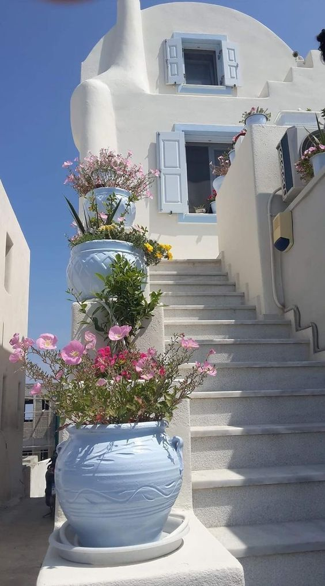
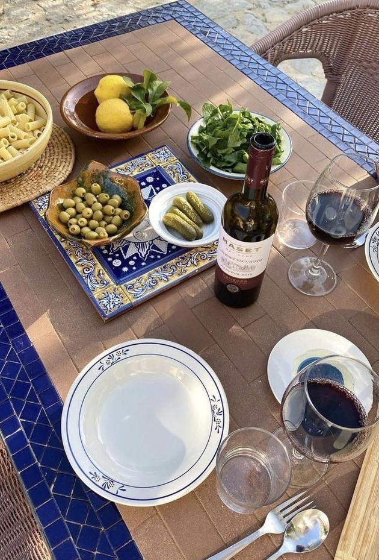
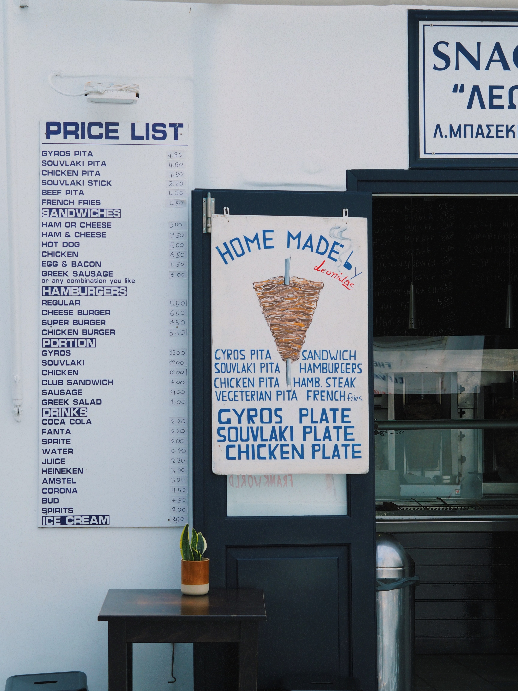
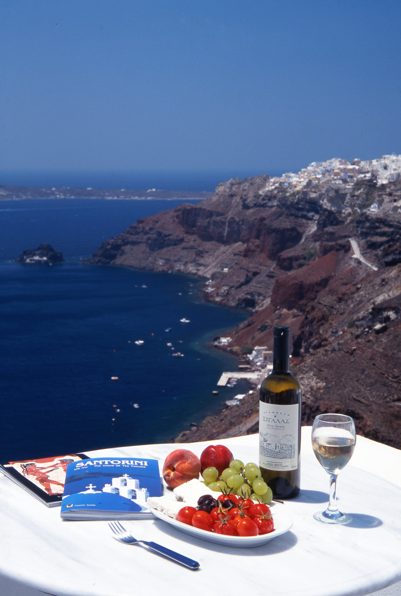

About Us!
Our journey has started a long time ago, back in greece where my great-grandparents started their business on the streets of Santorini, Greece. They would sell the best food on the whole island. We decided to bring a little bit of Greece to over here!
We sell the best Greek food on the food truck market! It is cheap (not to mention Greek) and on the street at these places! come visit us and by presenting us with this code, ilovegreekonthestreet, and get free olives on the side, just like if you were in Greece!
We are opening our first restaurant Fred F. French Building | 551 Fifth Avenue in New York, NY. Our inauguration is on july 20th! come visit us!